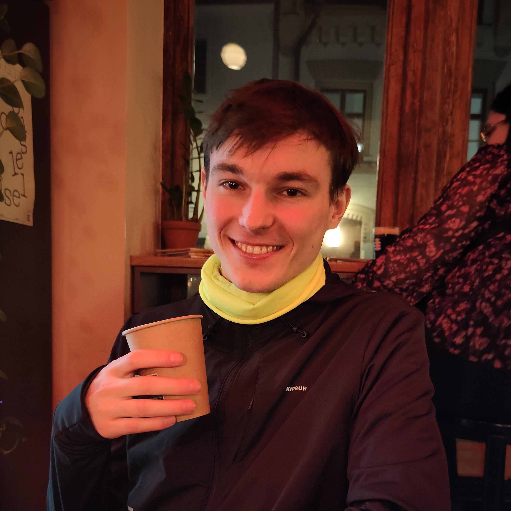
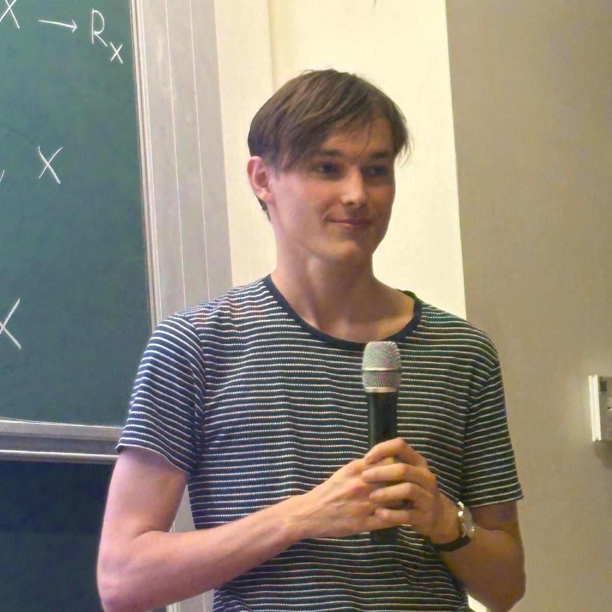
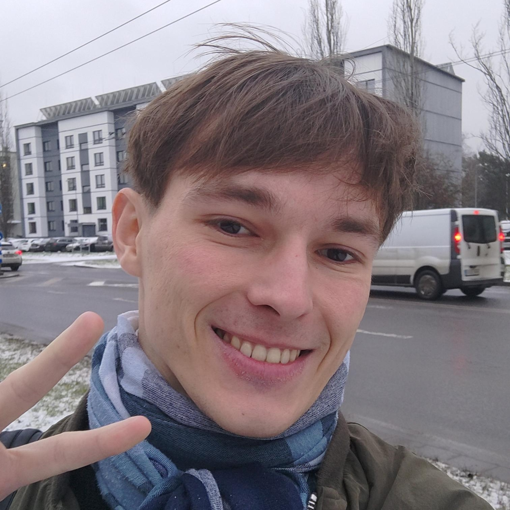
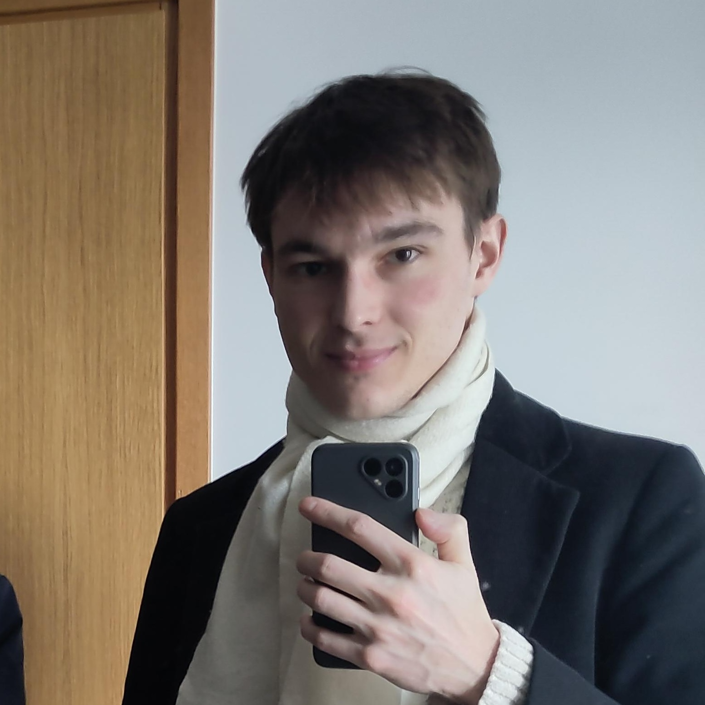

Vincent's research website




I am a postdoctoral researcher in computer science in the Compositional Systems and Methods Group in TalTech.
I am interested by the interface between mathematics and computer science. I work on λ-calculus, semantics of programming languages, profinite spaces and Stone-type dualities, codensity monads, linear logic, algebraic theories and higher-order automata, in the light of category theory.
My orcid number is 0009-0005-0638-1363.
I did my PhD at IRIF, Paris. The PhD manuscript is available on its HAL page.
Here are my DBLP page and my arXiv preprints: